Anatomical landmarks
- Psoas major: the lumbar plexus forms within the muscle. The femoral nerve emerges laterally and supplies most of the anterior thigh, while the obturator nerve emerges medially and supplies most of the medial thigh. The sciatic nerve supplies the posterior thigh.
- Greater sciatic foramen: piriformis divides it into upper and lower passages. The superior gluteal nerve and vessels pass above piriformis. Below it pass the sciatic and posterior femoral cutaneous nerves, inferior gluteal nerve and vessels, pudendal nerve and internal pudendal vessels, and nerves to obturator internus and quadratus femoris.
- Femoral triangle: from lateral to medial lie the femoral nerve, artery, vein and femoral canal. The femoral nerve lies outside the sheath.
- Popliteal fossa: the central structures run from superficial to deep as tibial nerve, popliteal vein, then popliteal artery. The common fibular nerve follows the lateral border toward the fibular neck.
Obturator nerve injury
Course
The obturator nerve (L2–L4) reaches the thigh through the obturator canal at the upper margin of the obturator foramen. Anterior: descends in front of obturator externus and adductor brevis. Posterior: descends behind adductor brevis and in front of adductor magnus.
Causes
Rare. Penetrating wounds, anterior hip dislocation, obturator hernia (abdominal hernia through the obturator foramen), or compression by the fetal head during labour.
Deficits
Motor: Hip adduction weakens. The adductor part of adductor magnus uses the obturator nerve, while its hamstring part uses the tibial division of the sciatic nerve. Pectineus usually retains its femoral supply. Sensory: loss may be limited to a small patch of medial thigh.
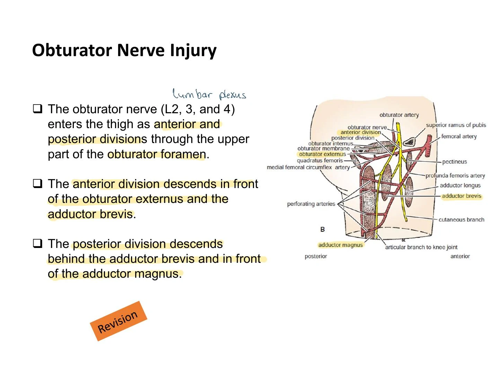
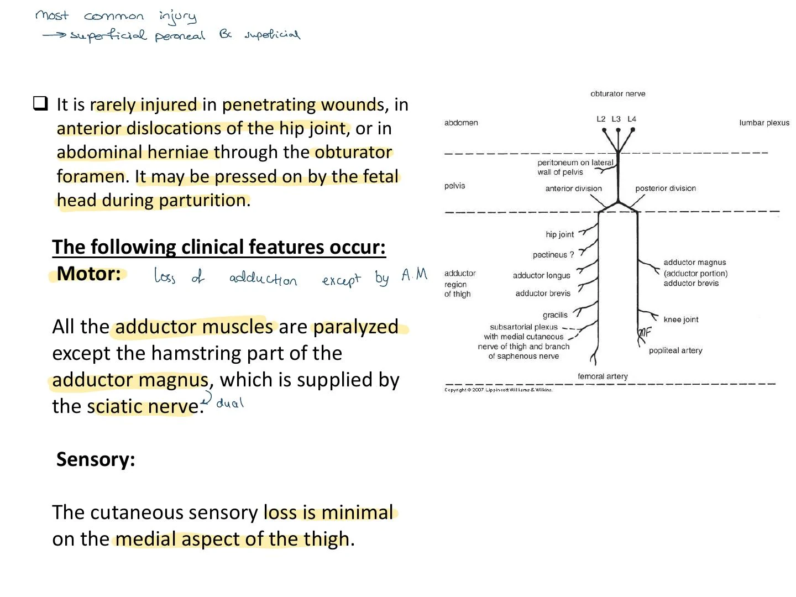
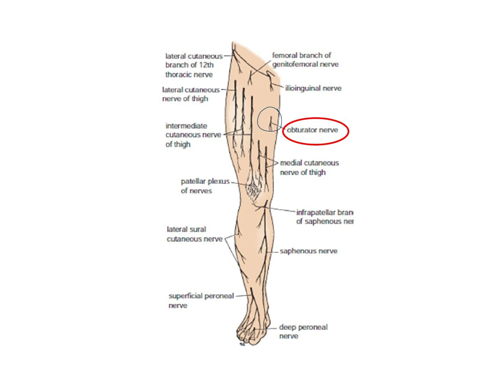
Femoral nerve injury
Lesion site: the nerve (L2-4) emerges from the lateral border of psoas major and enters the thigh behind the inguinal ligament midway between the anterior superior iliac spine (ASIS) and the pubic tubercle. In the femoral triangle, it lies lateral to the femoral sheath. Cause: stab or gunshot wounds; complete damage is rare.
Motor: quadriceps femoris paralyzed, so the knee cannot be extended; the knee may buckle during walking and the patellar reflex may be reduced or absent. Sensory: the intermediate and medial cutaneous branches supply the anterior and medial thigh. The saphenous nerve supplies the medial leg and medial foot border toward the ball of the great toe.
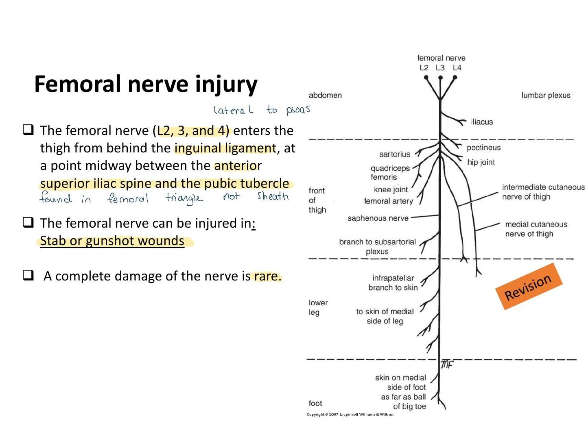
Sciatic nerve injury and sciatica
Course: L4–S3. It usually exits the greater sciatic foramen below piriformis and curves laterally and downward through the gluteal region (midway between the posterior superior iliac spine (PSIS) and ischial tuberosity, then between greater trochanter and ischial tuberosity), descends in the midline of the posterior thigh and divides into the common fibular and tibial nerves at a variable level, from higher in the thigh to near the popliteal fossa. The handwritten note contrasts mid-thigh with the lower third of the thigh.
Causes: misplaced gluteal intramuscular injections, penetrating wounds, pelvic fractures and hip dislocation. The slide uses the upper outer quadrant to illustrate why the injection site matters anatomically. It describes many sciatic lesions as incomplete and cites approximately 90% with greater involvement of the common fibular division. This is a course figure. At the fibular neck the common fibular nerve is superficial, a separate reason it is vulnerable to local trauma.
Motor: a complete proximal lesion weakens knee flexion because it denervates the hamstrings. Sartorius (femoral) and gracilis (obturator) preserve some knee flexion. Loss of ankle dorsiflexion causes foot drop, with the forefoot hanging under gravity. Plantar flexion is also lost in a complete sciatic lesion. Sensory: most of the leg and foot lose sensation while the medial saphenous strip is spared.
The same medial strip helps localize a femoral lesion when sensation there is lost.
Sciatica
Pain along the sciatic sensory distribution: posterior thigh, posterior and lateral leg, lateral foot. Causes: intervertebral disc prolapse pressing on lower lumbar/sacral roots; intrapelvic tumour pressing on the sacral plexus or sciatic nerve; inflammation of the nerve or its branches.
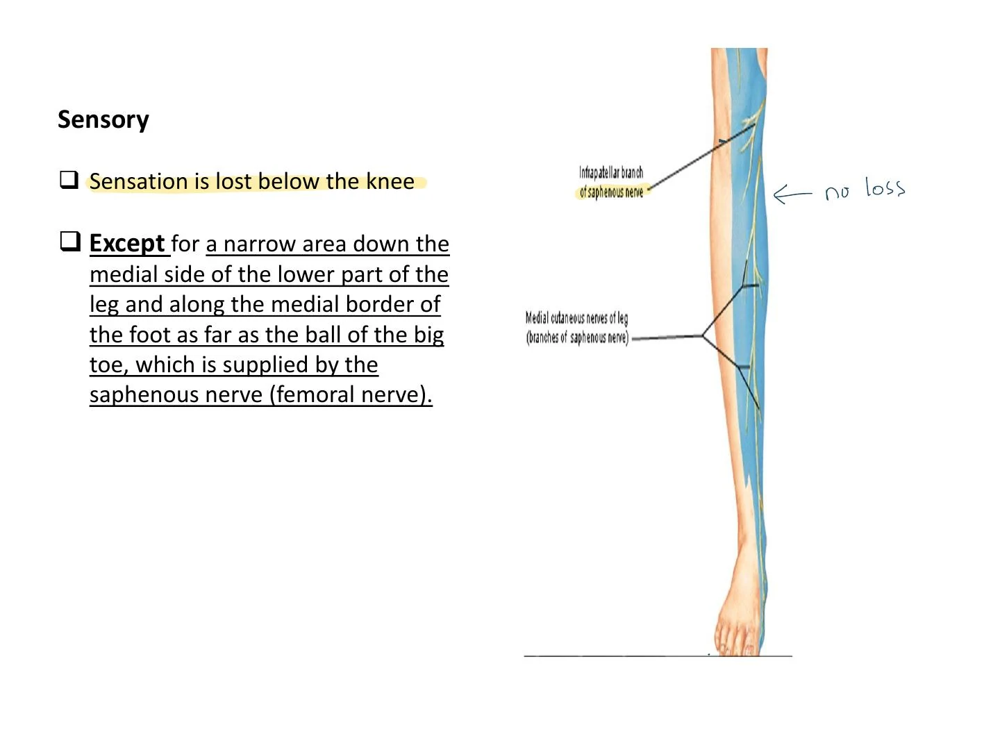
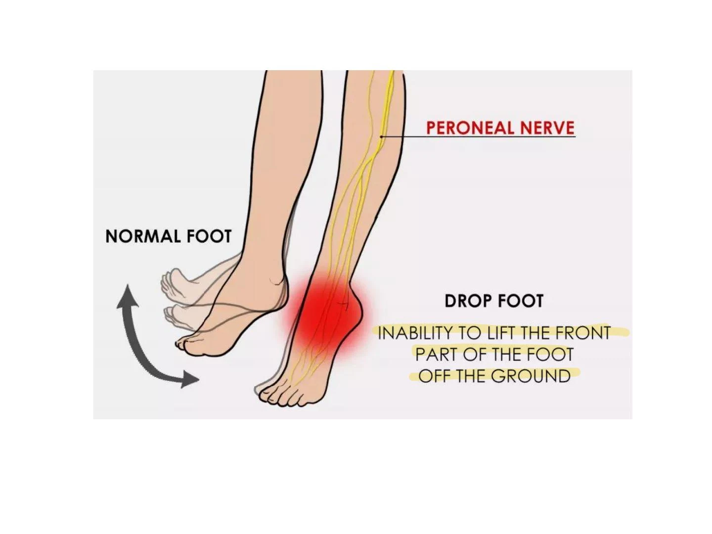
Common fibular (peroneal) nerve injury
Lesion site: exposed as it winds around the fibular neck and enters fibularis longus. Fracture at the fibular neck can injure it.
Motor: the deep fibular nerve supplies the anterior leg compartment (tibialis anterior, extensor digitorum longus, fibularis tertius and extensor hallucis longus) and extensor digitorum brevis on the dorsum of the foot. The superficial fibular nerve supplies the lateral compartment (fibularis longus and brevis). A complete common fibular lesion weakens dorsiflexion, toe extension and eversion. Unopposed plantar flexors and invertors give equinovarus (plantar flexed and inverted, with foot drop).
Sensory: the superficial fibular branch supplies the lower anterolateral leg and most of the dorsum of the foot. The deep fibular branch supplies the first toe web space. The saphenous strip and plantar sensation are spared.
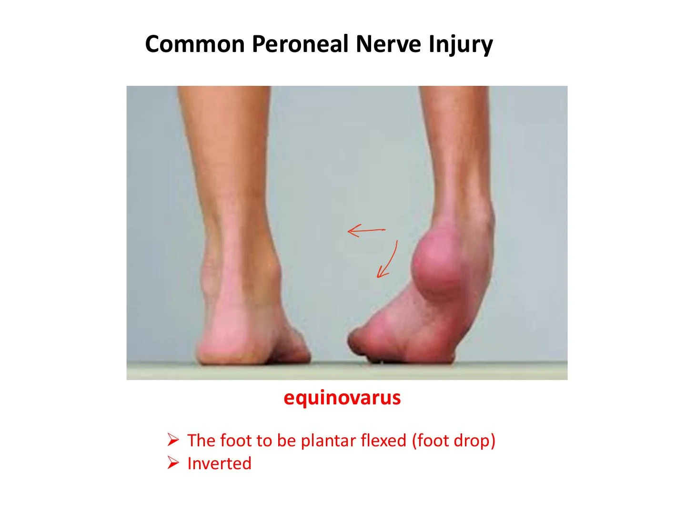
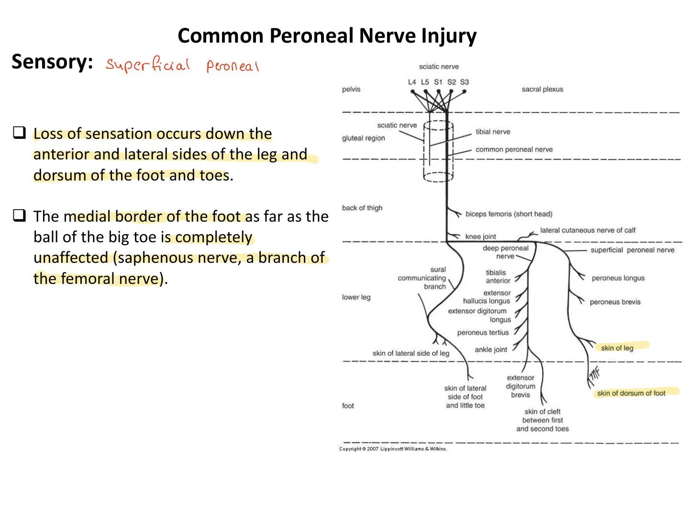
Tibial nerve injury
The tibial nerve lies superficial to the popliteal vessels in the fossa, then passes deep to gastrocnemius and soleus. Its deep course in the leg protects it from injury.
Motor: A complete proximal lesion paralyses the posterior leg and intrinsic plantar muscles. Plantar flexion and toe flexion are lost and inversion is weakened. Dorsiflexors and evertors pull the foot into a calcaneovalgus posture (dorsiflexed and everted). Sensory: loss of protective sensation at the sole raises the risk of trophic ulcers.
Comparison
| Feature | Sciatic | Common fibular | Tibial |
|---|---|---|---|
| Site | Gluteal region/thigh | Fibular neck | Popliteal fossa/deep leg (rare) |
| Muscles lost | Hamstrings plus ankle and toe muscles | Anterior and lateral leg | Posterior leg and sole |
| Foot attitude | Foot drop | Equinovarus | Calcaneovalgus |
| Sensory loss | Below knee, except saphenous strip | Anterolateral leg, dorsum | Sole |
| Typical cause | Hip dislocation or misplaced gluteal injection | Fibular neck fracture | Deep wounds (rare) |
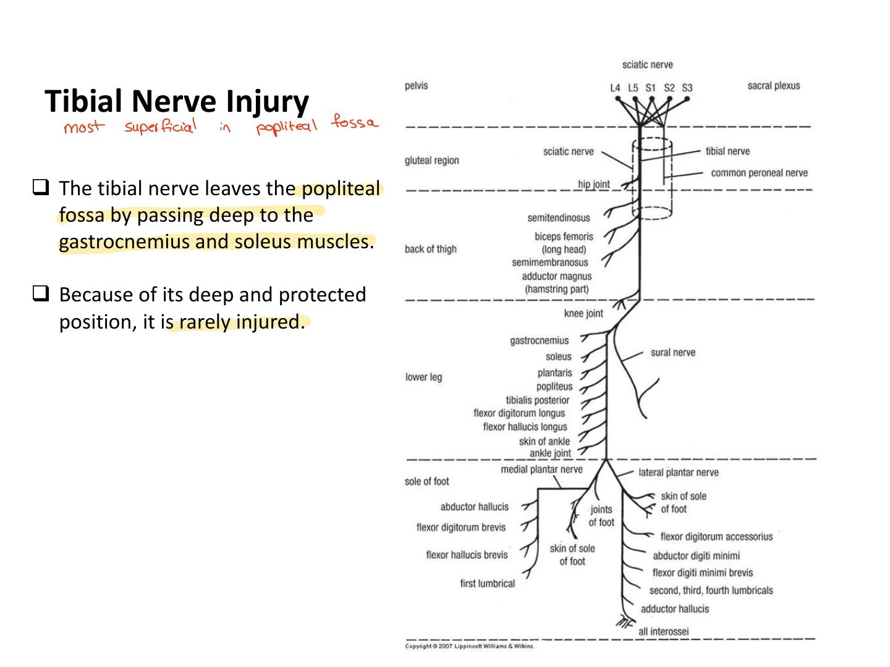
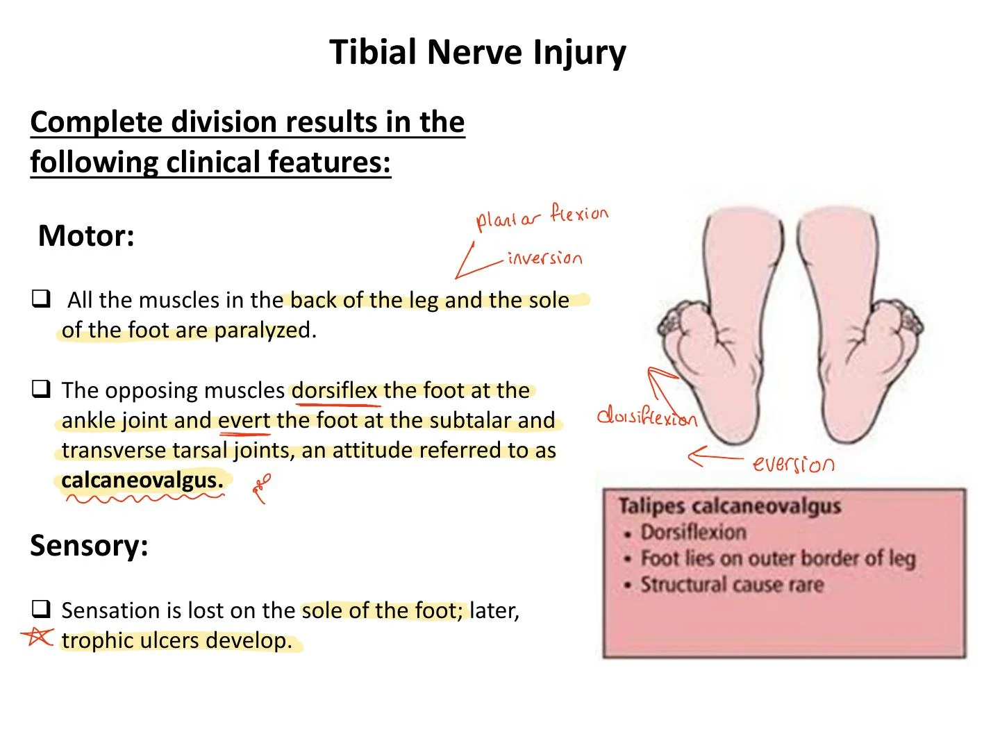
Superior gluteal nerve and Trendelenburg test
The superior gluteal nerve supplies gluteus medius, gluteus minimus and tensor fasciae latae, which help stabilize the pelvis in single-leg stance. Hip stability when standing needs (1) strong surrounding muscles and (2) an intact femoral head/neck lever within a normal hip joint.
How to test: compare pelvic height before and during single-leg stance, then repeat on the other side. A level pelvis indicates effective stance-side abductor support. A drop on the unsupported side is a positive Trendelenburg sign.
Localize to the stance side. When the right leg bears weight and the left pelvis drops, the right abductor mechanism is weak. If the cause is neural, this points to the right superior gluteal nerve. The dropped side can look longer as the pelvis tilts.
Positive test also occurs in: hip abductor paralysis (for example, in poliomyelitis), congenital hip dislocation, femoral head destruction or removal, a non-united femoral neck fracture, and severe coxa vara (reduced femoral neck–shaft angle). The notes emphasize the shared finding: impaired hip abductor support.
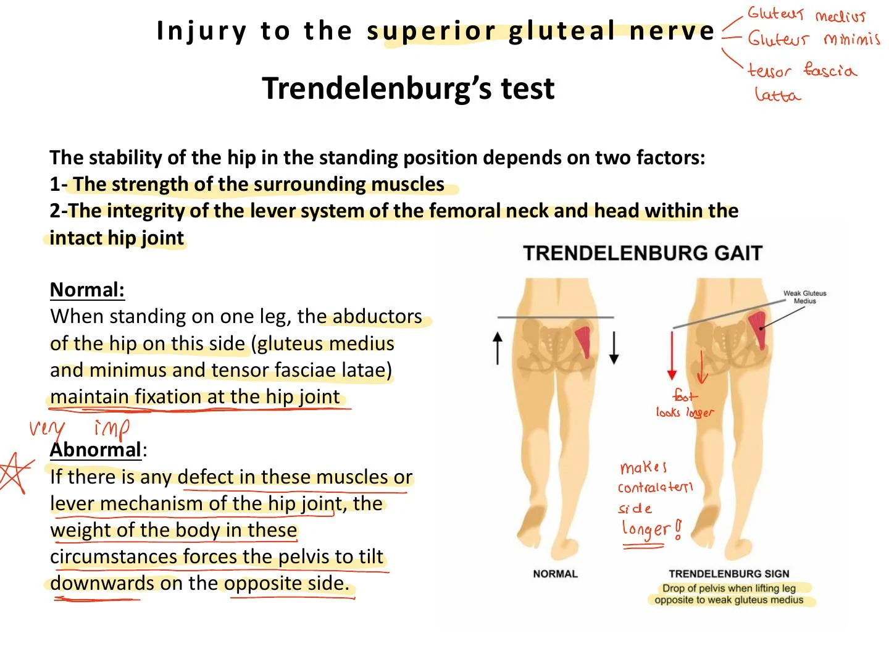
Quick review
- Obturator (L2–L4, lumbar roots): weak hip adduction. The hamstring part of adductor magnus retains its sciatic supply. Minimal sensory loss.
- Femoral (L2-4): quadriceps paralyzed, so no knee extension. Sensory loss: anterior/medial thigh plus saphenous territory.
- Sciatic (L4–S3, fourth lumbar through third sacral roots): weak knee flexion and loss of ankle and toe movement in a complete proximal lesion. Foot drop. Cause: bad gluteal injection, hip dislocation, pelvic fracture.
- Common fibular: neck of fibula fracture. Equinovarus; sensory loss anterolateral leg and dorsum of foot.
- Tibial: rare. Calcaneovalgus; sole numbness, with risk of trophic ulcers.
- Superior gluteal: gluteus medius/minimus and tensor fasciae latae (TFL) weak. Pelvis drops on the unsupported side during single-leg stance.